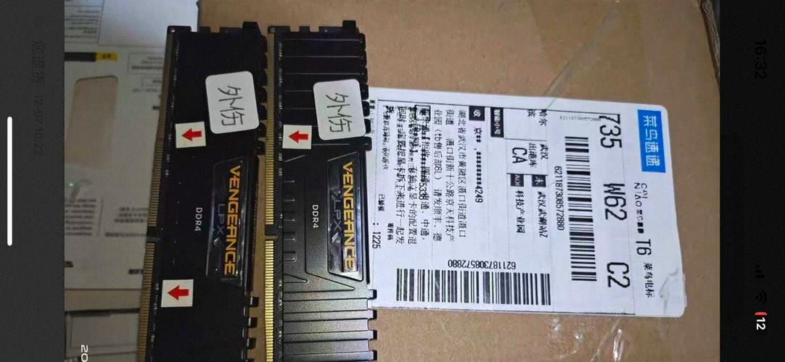

海盗船 Vengeance LPX DDR4-3600 32GB（2×16GB）

经典复仇者 LPX 系列，矮马甲设计对散热器兼容极佳，DDR4-3600 是锐龙 3000/5000 时代的黄金频率，用料扎实超频空间足，是 DDR4 平台装机的高频实用之选。
客观评测
Vengeance LPX DDR4-3600 套装为 2×16GB，时序 CL18-22-22-42，电压 1.35V，XMP 2.0 一键即可达到标称频率。3600MT/s 对 AMD 锐龙平台正好匹配 FCLK 1900MHz 同步，延迟表现优于更高异步频率。8 层 PCB 与铝制散热马甲兼顾电气性能与散热，高度约 34mm，兼容绝大多数大型塔式风冷。海盗船提供终身质保，渠道铺货充足。
主观点评
LPX 是装机清单上的老朋友，黑色矮马甲朴实无华，塞进任何机箱都不抢戏。在锐龙平台上开 XMP 直接 3600 稳定运行，是那个年代性价比最优的解法之一。想再往上压时序也留有余地，体质好的批次能小超一手。它不靠颜值取胜，靠的是多年来积累的兼容口碑——不知道买什么的时候选它，基本不会错。
优点与不足
- 3600 频率契合锐龙 FCLK 同步甜点
- 矮马甲设计，几乎不干涉塔式散热
- 8 层 PCB 用料，超频余量不错
- CL18 时序中规中矩
- 造型低调，灯效缺席
参数规格
| 容量 | 32GB（2×16GB） |
|---|---|
| 类型 | DDR4 台式机内存 |
| 频率 | 3600MT/s（PC4-28800） |
| 时序 | CL18-22-22-42 |
| 电压 | 1.35V |
| 颗粒 | 三星/海力士颗粒（随批次） |
| 散热 | 铝制散热马甲 |
| 高度 | 约 34mm |
| 超频 | 支持 XMP 2.0 一键超频 |
| PCB | 8 层 PCB 设计 |
| 兼容 | Intel 与 AMD 平台，兼容大型风冷 |
| 质保 | 终身质保 |